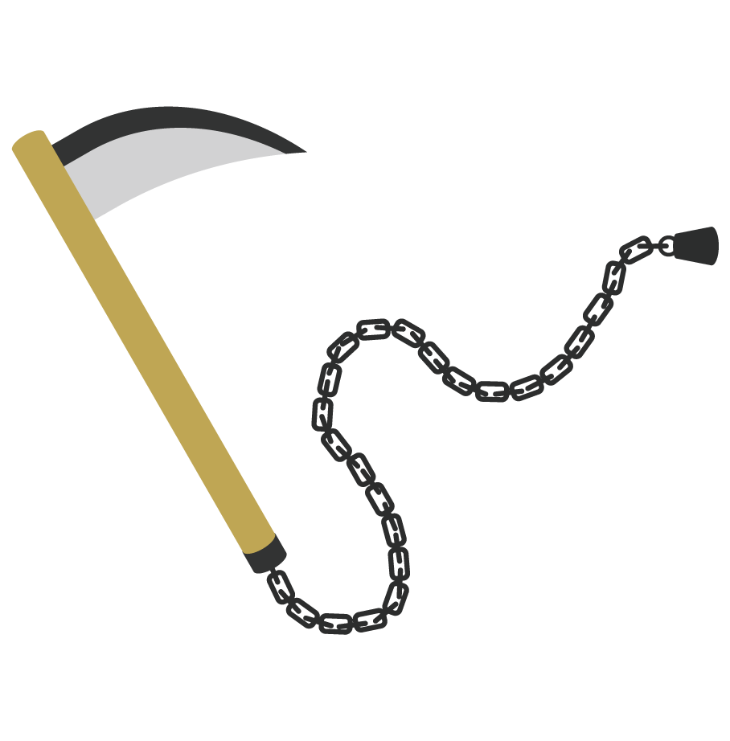
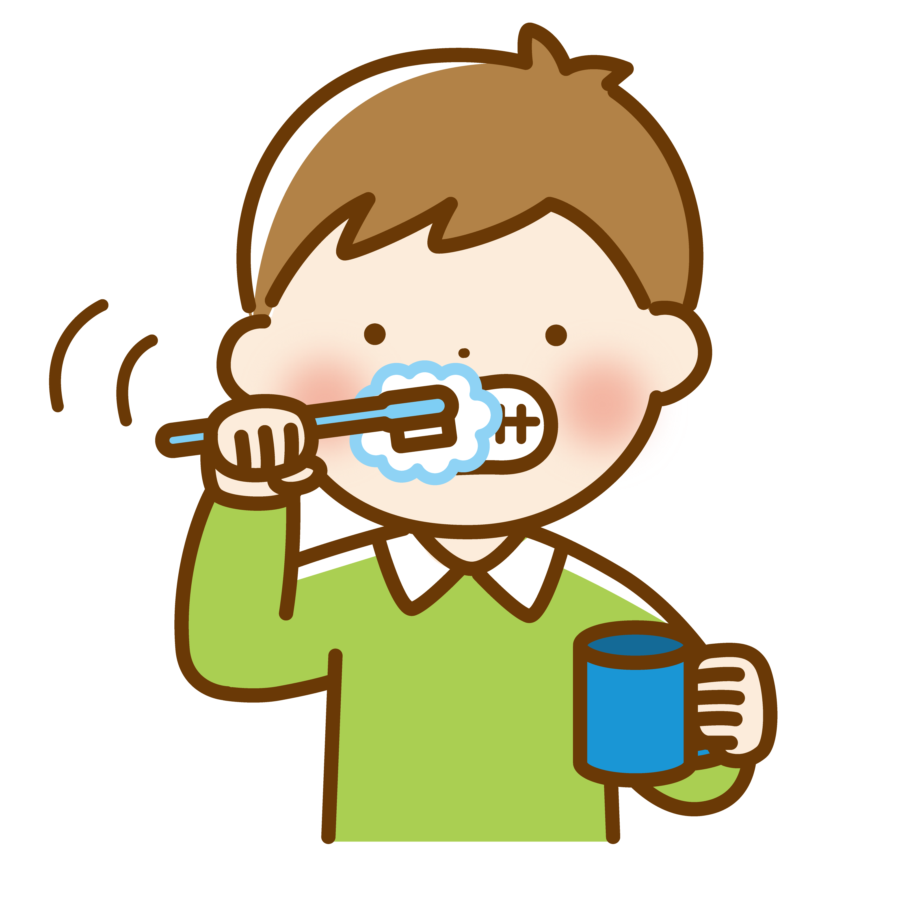

誰の何が浮かんでいるか。
○○○○○の○○
私が通っていた高校は六甲アイランドという人工島にあります。
服装は上は自由、下は指定という変わった制度で、
自分で授業の構成を決められる単位制の公立高校でした。
中学、高校は吹奏楽部でユーフォニアムとトロンボーンとホルンを経験しました。
高校の途中からコンピューター部に転部し、部長を務めました。
VisualBasicで作った脱出ゲームが私の最初の制作物です。
放課後はミスタードーナツでお喋りしたりウィンドウショッピングしたり、カラオケに行ったりバイトしたりするのが私の日常でした。
これは誰のことだろうか。
Hell Shocks more
これは何？
↓ 全部で63文字だ。9×7=63だ。
■■■■■■■■■■■■■宝■■■■■■■■宝■■■■■宝■■宝■■宝■■宝■■宝■■宝■■宝宝宝宝宝宝宝■■■■■■■■■■
ABC = ?
それぞれの？には同じ文字が入る。
一文字のひらがなをいれると単語になる。
別の二文字のひらがなを入れるとまた別の単語になる。
何か何が入りそうだろう？
●には同じひらがなが入る。
「ス」から「ゴ」まで最短ルートで行ってみよう。
鬼のマスを人が通ると食べられてしまう。
| ■ | ■ | ■ | ■ | ■ | ■ | ■ | ■ | ■ | ■ | ■ | ■ | ■ | ■ | ■ | ■ | ■ | ■ | ■ | ■ |
| ス | あ | か | ゆ | 鬼 | ■ | ■ | |||||||||||||
| ■ | ■ | ■ | き | ■ | ■ | ■ | ■ | ■ | ■ | な | ■ | ■ | ■ | ||||||
| ■ | こ | ■ | ■ | 草 | ■ | ■ | 蛇 | が | ■ | ■ | ■ | う | ■ | ||||||
| ■ | ■ | ■ | ■ | と | ■ | ■ | ■ | ■ | ■ | ■ | ■ | ■ | |||||||
| ■ | ■ | け | 鬼 | り | ■ | の | ■ | 鬼 | ■ | ■ | ■ | ||||||||
| ■ | ■ | ■ | ■ | ■ | る | ■ | ■ | き | ■ | 鬼 | ■ | ■ | ■ | ■ | |||||
| ■ | た | ■ | ■ | 鬼 | ■ | ■ | と | 草 | ■ | ||||||||||
| ■ | ■ | ■ | ■ | ■ | な | ■ | 鬼 | ■ | ■ | ■ | ■ | え | ■ | ||||||
| ■ | え | に | ■ | ■ | ひ | ■ | ■ | ■ | ■ | 鬼 | か | ■ | |||||||
| ■ | ■ | ■ | ■ | ■ | ■ | ■ | め | ■ | に | ■ | ■ | ■ | |||||||
| ■ | ■ | 鬼 | な | ■ | ■ | ■ | ■ | ■ | て | 草 | ■ | ■ | |||||||
| ■ | ■ | ■ | ■ | ■ | ■ | ら | ■ | ■ | る | ■ | ■ | ■ | |||||||
| ■ | ？ | つ | 鬼 | ■ | ■ | 草 | む | ら | ■ | ||||||||||
| ■ | ■ | ■ | ■ | ■ | ■ | ■ | ■ | ■ | ■ | ■ | ■ | ■ | ■ | ■ | ■ | ■ | ■ | ゴ | ■ |
これは何だろう。

何をしているのだろう。

全てはかなに――
- ▲歩
- △銀
- ▲飛
- △角
- ▲金
- △桂
- ▲香
- △歩
- ▲王
- △玉
この先にあるのは何という部屋か。
下の錠前に鍵を差し込め。
※ ひらがなで入力してください